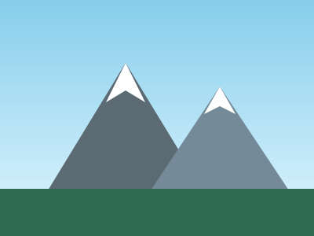
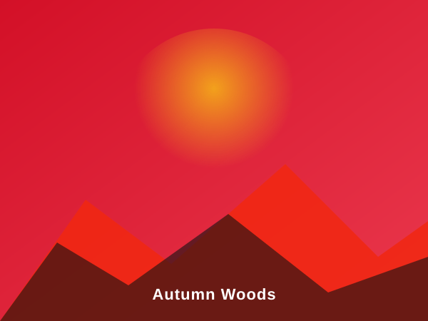
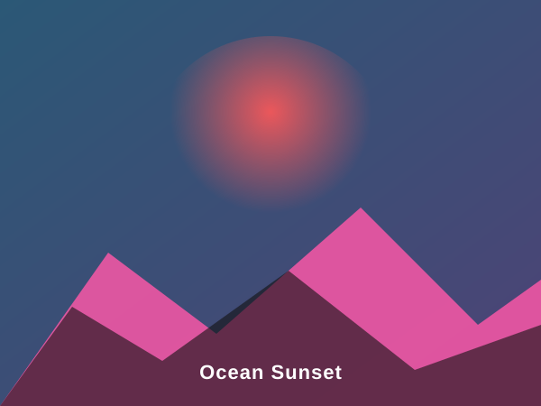
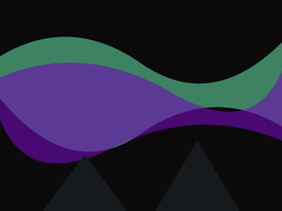
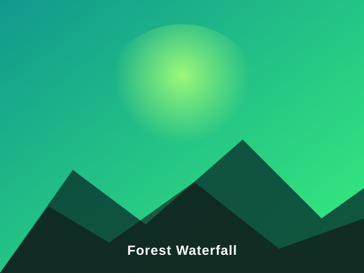
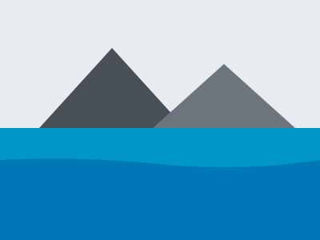
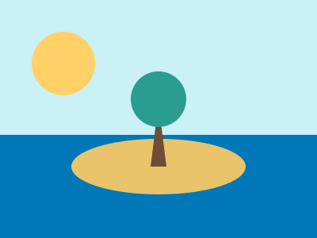

Welcome to the Nature Wonders Photo Gallery, an interactive showcase celebrating the extraordinary landscapes and natural ecosystems across our planet. From sun-drenched coastal waters to snow-capped mountain peaks, each featured destination reflects the breathtaking variety of Earth's wilderness.
This responsive gallery adapts seamlessly to your device dimensions and accessibility preferences. Explore the collection below to discover scenic vistas, tranquil forests, and vibrant geographical landmarks formatted for optimal viewing on mobile, tablet, and desktop screens.






